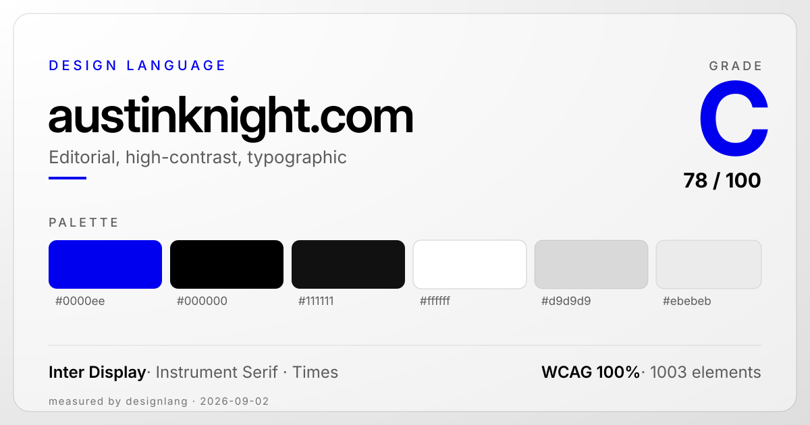

Head of Design at Square, in Austin. The site is unmistakably web-native and editorial: black on white, oversized Inter Display headings, Instrument Serif italics for emphasis, Times body copy, and the classic unvisited-link blue as its only accent.

01 Design-System Score 78 / 100 · C
Seven weighted categories, measured across 1003 elements.
Color discipline100
Typography consistency50
Spacing system85
Shadow consistency90
Border-radius consistency65
Accessibility100
CSS tokenization50
02 Palette
A near-monochrome system — black ink on white paper, one near-black surface, two light grays — lifted by a single electric-blue accent: the classic unvisited-link #0000ee.
#0000ee
accent · link blue · 120×
#000000
ink · text / border · 1641×
#111111
surface · near-black · 102×
#ffffff
paper · white · 196×
#d9d9d9
bg · light gray · 2×
#ebebeb
input bg · 1×
#333333
bg · 1×
03 Type Specimens
Four faces, almost all at weight 400 — hierarchy comes from size, not weight. Inter Display carries the oversized headings and giant nav links, Times sets the body, Instrument Serif adds the italic accent. Rendered at measured sizes.
nav link · Inter Display 400 · 55px · -1.1 · rgba(0,0,0,.6)
work · writing · podcasts
h4 · Inter Display 400 · 35px / 42
Advisor at Sequoia Capital.
body · Times 400 · 18px / 30.6
Co-host of the UX & Growth and Decrypting Crypto podcasts, and a mentor at Columbia and Stanford.
caption · Inter 300 · 14px / 16.8
Previously at Google and HubSpot
accent · Instrument Serif italic 400 · 24px
designing for scale.
04 Spacing & Layout
A 2px base unit resolving to an 11-step ladder that reaches a 180px section gap. Layout is flex-only (Framer): 0 grid containers, 270 flex containers. Radius runs from a 5px chip to a 162px pill.
s1 · 6
s2 · 24
s4 · 40
s6 · 55
s8 · 64
s9 · 70
Container
1440px
Gutter
30px
Radius (pill)
100px · 32×
Grid / flex
0 / 270
05 Motion
Restrained and scroll-linked: a single 400ms duration and one custom easing curve drive color transitions, with a continuous spinner as the only keyframe. Reduced-motion honored.
md · default
400ms
easing
custom · 14×
feel
mixed
scroll-linked
yes
cubic-bezier(0.44, 0, 0.56, 1) near-symmetric ease-in-out · transition: color 400ms
__framer-loading-spin the one keyframe · rotate 0° → 360°
06 Correction Plan
What holds the grade back, and what to keep.
Consolidate the type system. Typography 50/100 — the lowest score. Four families (Inter Display, Instrument Serif, Times, Inter) run at essentially one weight (400 covers 968 of 1003 elements). Cut to a display + a body pair, or add real weight contrast, so hierarchy stops leaning entirely on size.
Tokenize and purge the CSS. CSS tokenization 50/100 — 2316 duplicate declarations, 15 !important overrides, and 67% of the CSS unused. Typical Framer export weight; consolidate the repeated transition groups and tree-shake the dead rules.
Tame the radius set. Border-radius 65/100 — twelve distinct radii from a 5px chip to a 162px pill. Standardize on the pill (100px, used 32×) plus one small step and drop the in-betweens.
Keep the color discipline and accessibility. Both 100/100 — a tight black / white / near-black system with one electric-blue accent, and a clean flat elevation (shadow 90/100). Strong contrast throughout; don't dilute the palette.